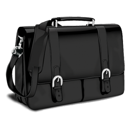
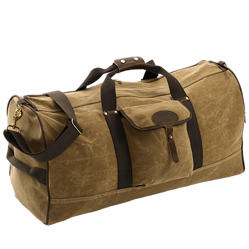

Мы предлагаем нашим клиентам большой выбор высококачественных, модных, стильных изделий из кожгалантереи на любой вкус и любого стиля. Сумки, кошельки, портфели, косметички (женские и мужские), барсетки, папки, визитницы, документницы, обложки на паспорт, ключницы, зонты, чемоданы (текстильные и из поликарбоната), портпледы, дорожные сумки, рюкзаки, дорожные саквояжи, дорожные косметички, мини-зонты, трости, монетницы, ремни, брелоки, футляры для ручек, футляры для очков, футляры для мобильных телефонов, футляры для компакт-дисков, чехлы для авиабилетов, чехлы для галстуков и многое, многое другое – для Вас от компании-производителя элитных эксклюзивных изделий из кожгалантереи Wittchen!

В наличии имеются: — элегантные клатчи к вечерним и повседневным нарядам; — классические качественные женские сумки из кожзама разных цветов, размеров и фактур; — качественные аналоги знаменитых дизайнерских сумочек: Сhanel, Prada, Dolce & Gabbanа; — изысканные повседневные женские кожаные сумки; — яркие молодежные ремни; — повседневные школьные и городские рюкзаки; — школьные сумки на одну ручку; — вместительные качественные текстильные спортивные и дорожные сумки; — текстильные рюкзачки для переноски вещей: обуви, спортивной формы; — украшения для сумок: стильные подвески. Большинство кожаных, текстильных и женских сумок из кожзама подходят для повседневной носки, но есть и эксклюзивные модели, которые можно носить исключительно с вечерними нарядами — как украшение или аксессуар. Повседневные сумки и клатчи — из кожи и кожзама  Классические повседневные женские кожаные и из кожзама сумки отличаются универсальностью и практичностью. Строгость линий, лаконичность дизайна, качественный пошив, надежная фурнитура и вместительность понравятся как бизнес-леди, так и заядлой моднице. Что касается серии из текстиля, то здесь обратите внимание на яркие и модные принты, насыщенные оттенки, украшенные которыми качественные текстильные спортивные и дорожные сумки повседневно будут поднимать настроение вам и окружающим. Хоть мода — дама изменчивая, выход в свет всегда ассоциируется с блеском, изысканностью линий, утонченностью деталей. Коллекция наших сумок клатчей из кожзама, кожи — это то, что превосходно дополнит ваш элегантный наряд. Для мужчин тоже кое-что найдется: современные текстильные спортивные и дорожные сумки разных размеров.
Преимущества магазина «Сумка Онлайн»:
1. Отборный ассортимент — количество качественных сумок постоянно увеличивается; наполняем ассортимент только качественными трендовыми моделями.Приятного вам шопинга!
2. Низкие цены — поставляем женские кожаные, текстильные и сумки из кожзама напрямую от фабрик-производителей.
3. Довольные покупатели — всего за год работы мы получили более 100 положительных отзывов. Наши клиенты довольны и качеством товара, и уровнем обслуживания.
4. Отправка в день заказа — все повседневные, дорожные и спортивные сумки есть в наличии! Доставка осуществляется в течение 1-3 дней по всей Украине любым удобным вам способом.
5. Наши консультанты — настоящие модные эксперты, которые посоветуют подходящую сумку под наряд, расскажут об актуальных трендах.
В нашем каталоге вы сможете выбрать качественную повседневную кожаную, текстильную и сумку из кожзама за гроши! Поверьте, таких цен вы еще не видели!